22580：从 GPT-2 到 Kimi K3，详解
原作者：ali（@waterloo_intern）。以下按照原帖顺序完整翻译；正文段落、列表、公式和代码均保留，配图按原位置收录。
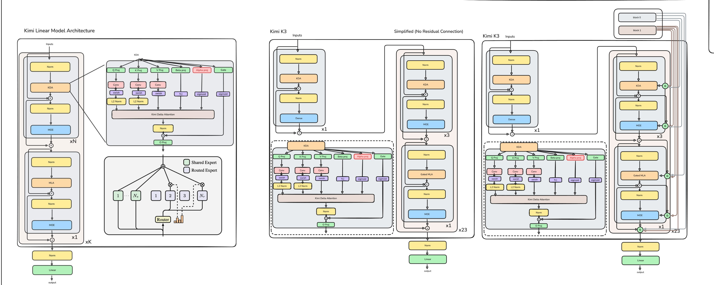
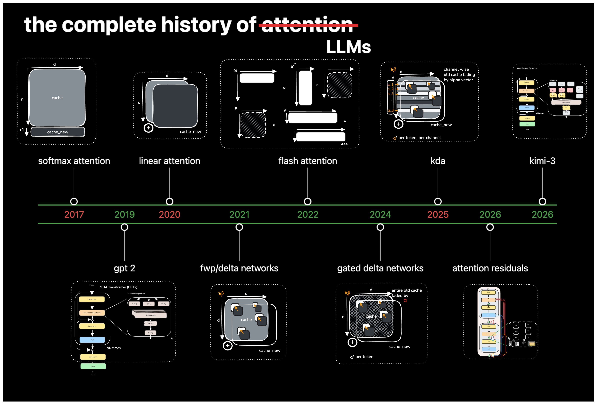
二万二千五百八十。这是一个 KimiK3（2026）模型中，能够容纳多少个 GPT-2（2019）模型的数量。七年时间里，我们把规模放大了 22,580 倍。但这真的只是……规模吗？
在这篇工作日志中，我会带你回顾我们是如何走到今天的，以及从那时到现在，究竟改变了多少——或者说，改变得有多少。我们将追溯最终通往 KimiK3 的主要架构发展历程。
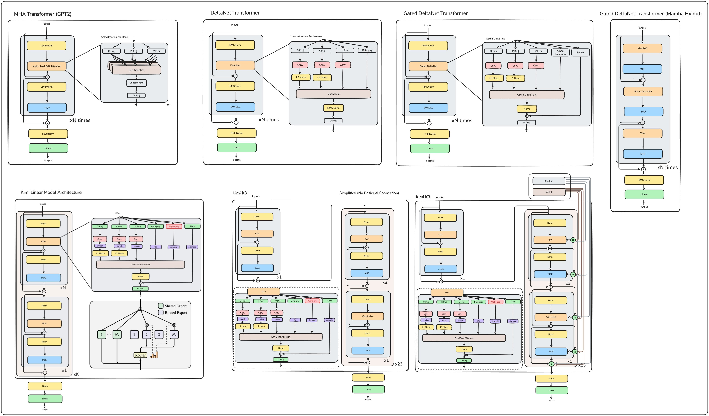
GPT-2
GPT-2 是一种仅解码器（decoder-only）架构：
tok_emb = self.transformer.wte(idx) # token embeddings of shape (b, t, n_embd)
pos_emb = self.transformer.wpe(pos) # position embeddings of shape (t, n_embd)
x = self.transformer.drop(tok_emb + pos_emb)
for block in self.transformer.h:
x = block(x)
x = self.transformer.ln_f(x)
logits = self.lm_head(x)
return logits
输入会接收 token embedding 和位置 embedding：
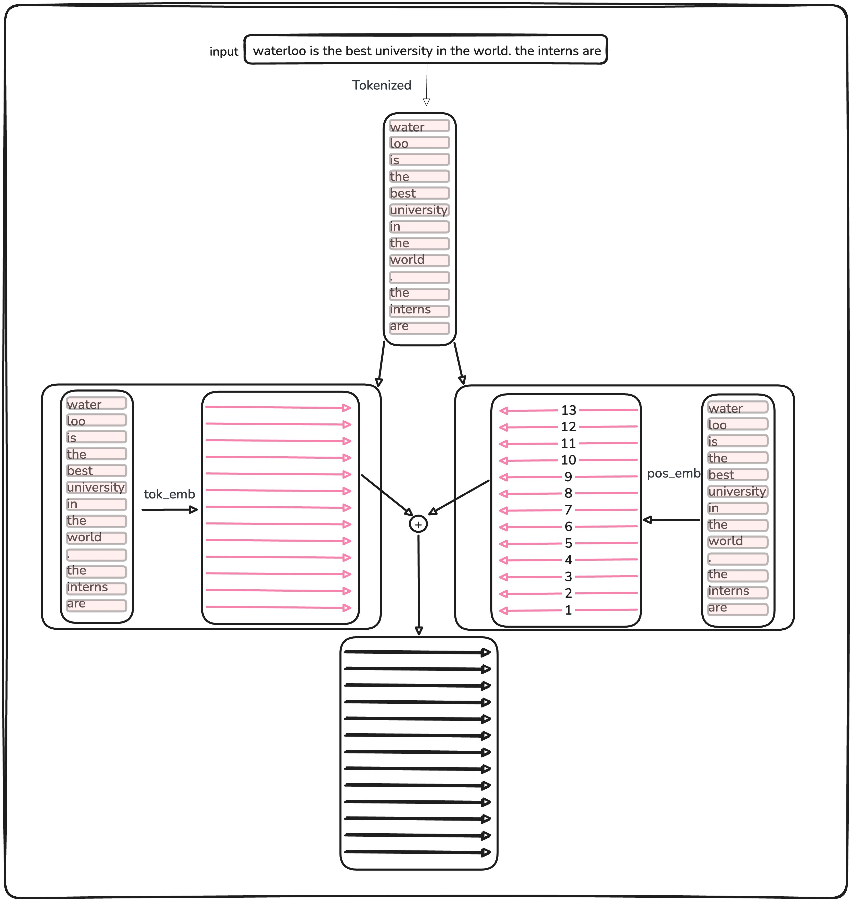
把每个 Transformer block 放大来看，它是这样的：
class Block(nn.Module):
def __init__(self, config):
super().__init__()
self.ln_1 = LayerNorm(config.n_embd, bias=config.bias)
self.attn = CausalSelfAttention(config)
self.ln_2 = LayerNorm(config.n_embd, bias=config.bias)
self.mlp = MLP(config)
def forward(self, x):
x = x + self.attn(self.ln_1(x))
x = x + self.mlp(self.ln_2(x))
return x
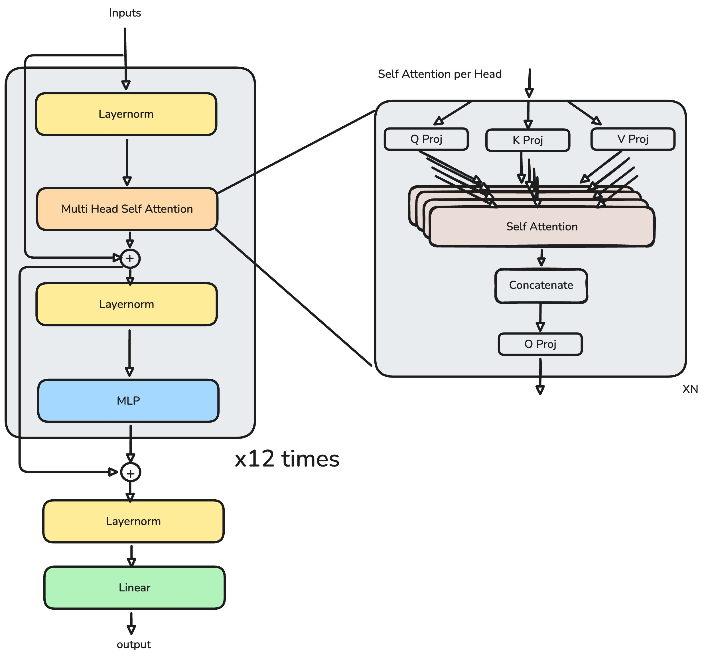
注意力的处理过程如下：
B, T, C = x.size() # batch size, sequence length, embedding dimensionality (n_embd)
# calculate query, key, values for all heads in batch and move head forward to be the batch dim
q, k, v = self.c_attn(x).split(self.n_embd, dim=2)
k = k.view(B, T, self.n_head, C // self.n_head).transpose(1, 2) # (B, nh, T, hs)
q = q.view(B, T, self.n_head, C // self.n_head).transpose(1, 2) # (B, nh, T, hs)
v = v.view(B, T, self.n_head, C // self.n_head).transpose(1, 2) # (B, nh, T, hs)
# manual implementation of attention
att = (q @ k.transpose(-2, -1)) * (1.0 / math.sqrt(k.size(-1)))
att = att.masked_fill(self.bias[:,:,:T,:T] == 0, float('-inf'))
att = F.softmax(att, dim=-1)
att = self.attn_dropout(att)
y = att @ v # (B, nh, T, T) x (B, nh, T, hs) -> (B, nh, T, hs)
y = y.transpose(1, 2).contiguous().view(B, T, C) # re-assemble all head outputs side by side
# output projection
y = self.resid_dropout(self.c_proj(y))
return y
生成最终的隐藏状态矩阵后，语言模型头会把它映射为词表上的 logits。在自回归解码期间，选择下一个 token 时，只需要使用最后一个位置上的 logits。
这是仅解码器生成方式中的一种低效：模型会为输入中的每一个位置计算表示，但每个解码步骤只会使用最后一个位置上的 logits。如果没有缓存，在生成下一个 token 时，大量工作都必须重新执行。
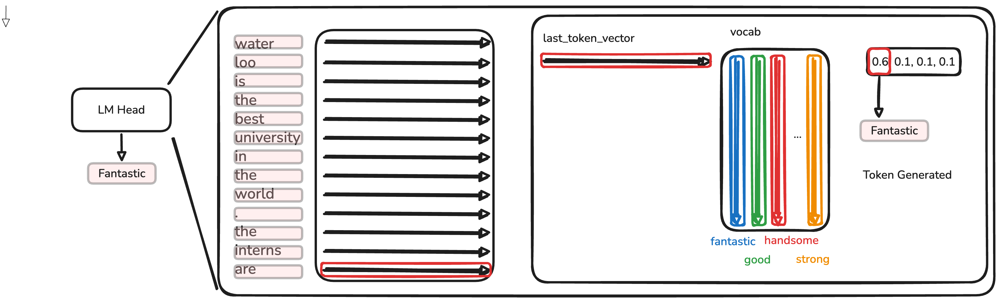
KV Cache 来自一个非常直接的观察：把刚生成的 token 追加到输入之后，如果不做缓存，模型就必须重新计算此前所有 token 的投影。保存这些 token 的 key 和 value 向量，可以避免这种重复工作。
这份存储就是 KV Cache。它保存前面 $N-1$ 个 token 的向量，而且可能膨胀到足以形成显存带宽瓶颈的程度。
总体而言，在大约 5 万个可能 token、12 个 block、12 个 head，以及 768 维 embedding 的配置下，我们的基线模型大约有 1.24 亿个参数。
vocab_size: int = 50304 # GPT-2 vocab_size of 50257, padded up to nearest multiple of 64 for efficiency
n_layer: int = 12
n_head: int = 12
n_embd: int = 768
KimiK3 有 2.8 万亿个参数，因此一个 KimiK3 模型包含的参数量，大约相当于 22,580 个 GPT-2 模型。
线性注意力（Linear Attention）
Softmax 注意力会在 $q\cdot k$ 乘积之后应用非线性，从而把每个 query 与每个 key 耦合起来。线性注意力则会分别对 $q$ 和 $k$ 应用一个特征映射，例如 ELU+1。这样一来，乘法就可以重新结合，不断增长的 K、V 向量集合也就可以被折叠进一个固定的 $D\times D$ 状态中。
论文对 $O(N^2)$ 的描述一开始把我搞糊涂了。“Transformer 每个时间步的成本，会按照当前序列长度的平方增长”，这句话并不正确。FlashAttention 解决的不就是这个问题吗……后来我才发现，这篇论文发布于 2020 年。
在当时，训练通常会显式实例化完整的 $N\times N$ 注意力矩阵；FlashAttention 还不存在；而且作为参考的自回归实现经常会在没有 KV Cache 的情况下重新计算 token 历史。
def forward(self, x, mask=None, past_kv=None):
# x is b,t,d
b,t,d=x.shape
d_head=d//self.num_heads
h=self.num_heads
qkv=self.qkv_proj(x)
q=qkv[:, :, :d].view(b,t,h,d_head).transpose(1,2)
k=qkv[:, :, d:2*d].view(b,t,h,d_head).transpose(1,2)
v=qkv[:, :, 2*d:].view(b,t,h,d_head).transpose(1,2)
# at prefill, q,k,v have shapes b,h,t,d
# at decode, shape is b, h, 1, d
# so i cat at the t dimension, dim(2)
if past_kv is not None:
k_past=past_kv[0]
v_past=past_kv[1]
k=torch.cat((k_past, k), dim=2)
v=torch.cat((v_past, v), dim=2)
scores=(q@k.transpose(-1,-2))/math.sqrt(d_head)
if past_kv is None: #we're in prefill and need to mask
causal_mask=torch.ones(t,t,dtype=bool, device=q.device)
causal_mask=torch.triu(causal_mask, diagonal=1)
scores=scores.masked_fill(causal_mask, float('-inf'))
if mask is not None:
scores=scores.masked_fill(~mask, float('-inf'))
#get attn (bhtt x bhtd)
attn=scores.softmax(-1)#bhtt
o=attn@v #bhtd
o=o.transpose(1,2).contiguous().view(b,t,d) #b,t,d
# use x to get qkv
o_proj=self.o_proj(o)
past_kv=(k, v)
return o_proj, past_kv
从图中更容易理解同一过程。每个解码步骤都会对 HBM 执行两次 $ND$ 规模的读取，以及两次一维写入；与此同时，KV Cache 会按照序列长度，以 $O(N)$ 的速度线性增长。
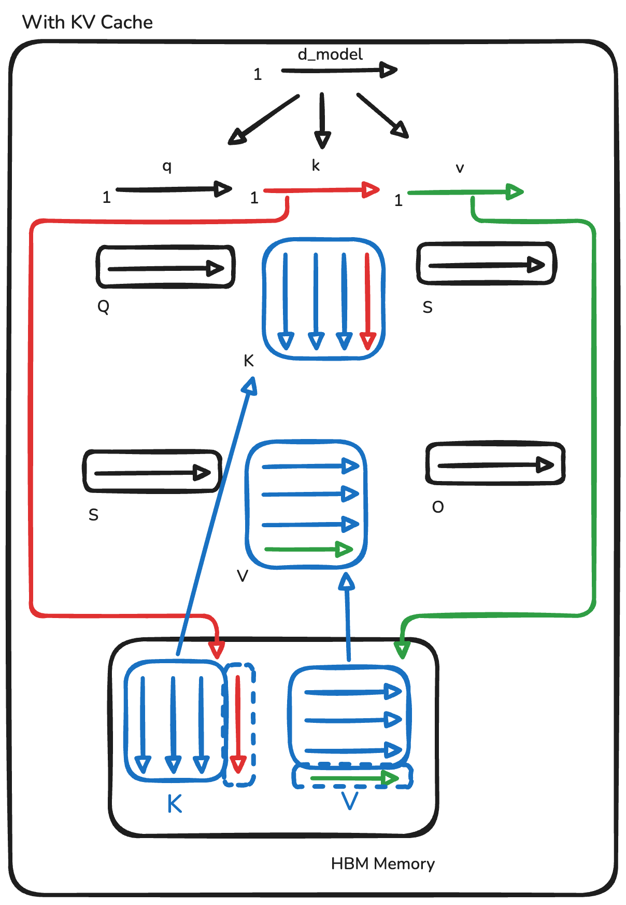
注意这些过量的读取和写入。这篇论文用下面的方式替代了它们：
def forward(self, x, mask=None, cache=None):
# x is b,t,d
b,t,d=x.shape
d_head=d//self.num_heads
h=self.num_heads
qkv=self.qkv_proj(x)
q=qkv[:, :, :d].view(b,t,h,d_head).transpose(1,2)
k=qkv[:, :, d:2*d].view(b,t,h,d_head).transpose(1,2)
v=qkv[:, :, 2*d:].view(b,t,h,d_head).transpose(1,2)
k=F.elu(k)+1
k=k.transpose(-1,-2)
q=F.elu(q)+1
S,z=cache if cache is not None else (0.0, 0.0)
S=S+k@v
z=z+k
o=q@S #bhtd
denom=q@z
o_scaled=o/denom
o_scaled=o_scaled.transpose(1,2).contiguous().view(b,t,d)
o_proj=self.o_proj(o_scaled)
cache=(S,z)
return o_proj, cache
这里存在一个权衡。
在这里，我们把 softmax 使用的指数函数，替换成了分别应用于 $q$ 和 $k$、并且发生在二者交互之前的 ELU+1。两种方法都会对最终的分数进行归一化，但线性注意力使用的特征映射，是对 softmax kernel 表达能力较弱的一种近似。这种近似可能降低保真度，不过实际精度损失取决于具体架构和工作负载。
注意，我们仍然会除以 $qk$ 的总和；为了简化，图中省略了这一点。从高层来看，注意力由三个步骤组成：
- 让 $qk$ 分数变成非负数。线性注意力使用 ELU+1，softmax 使用指数函数。
- 除以总和。
- 计算 value 的加权平均值。
这样保留了注意力的基本约定，但为了让 QK 分数非负，使用了一个表达能力较弱的特征映射。
DeltaNet（Fast Weight Programmers）
有限大小的缓存必须覆盖已有信息，或者把新信息与已有信息组合起来。来自 token $i-1$ 的状态不会获得一个属于自己的独立槽位；它会被加入同一个 $D\times D$ 矩阵中。因此，新的 query 不再能够检索出每个早期 token 的完全独立表示。
这种相加操作也是效率提升的来源。以加法方式更新缓存，而不是不断拼接，可以防止缓存按照 $O(N)$ 增长；但同一个操作也会导致信息之间发生干扰。DeltaNet 处理的就是这种可恢复性损失。
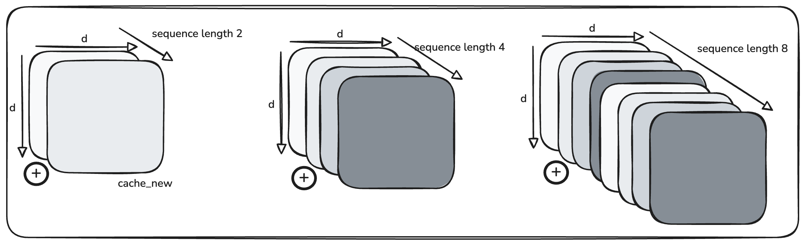
Schlag 的论文《Fast Weight Programmers》对此有一段非常精炼的描述：
“当序列长度超过存储容量时，模型可能会进入一种超容量状态。为了在这种状态下正常工作，模型应当学会动态地与记忆内容交互，并有选择地决定应该保留哪些 key-value 关联、删除哪些关联。纯粹的加法指令可能并不适合这个目的……像公式 17 那样，无休止地向有限大小的记忆中添加新的关联，最终必然会达到极限。”
使线性注意力具有吸引力的情况——也就是 $N$ 远大于 $D$——同时也暴露了它最主要的局限。一旦状态超出了有效容量，不同关联就会因为更新是纯加法、而且没有任何信息离开缓存，开始彼此干扰。
def forward(self, x, mask=None, cache=None):
# x is b,t,d
b,t,d=x.shape
d_head=d//self.num_heads
h=self.num_heads
qkv=self.qkv_proj(x)
q=qkv[:, :, :d].view(b,t,h,d_head).transpose(1,2)
k=qkv[:, :, d:2*d].view(b,t,h,d_head).transpose(1,2)
v=qkv[:, :, 2*d:].view(b,t,h,d_head).transpose(1,2)
q = F.normalize(F.silu(q), dim=-1)
k = F.normalize(F.silu(k), dim=-1)
beta = torch.sigmoid(self.w_beta(x)).view(b, 1, t, 1)
# new: per-token write strength
S = cache if cache is not None else 0.0
v_old = k @ S # read the board at this key
u = beta * (v - v_old) # the delta: only what's actually new
S = S + k.transpose(-1, -2) @ u # same outer-product write as before
o = q @ S # read, no denominator
o = o.transpose(1, 2).contiguous().view(b, t, d)
return self.o_proj(o), S
通过一个视觉例子会更容易理解。
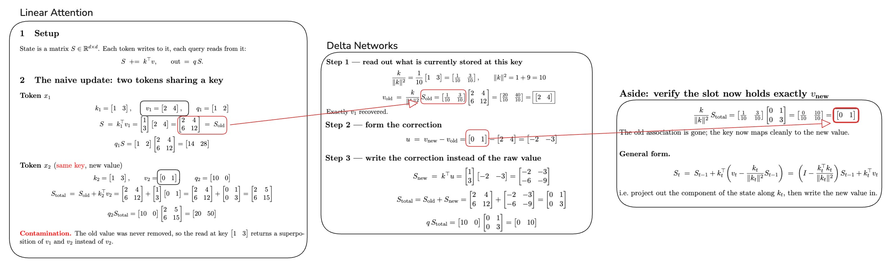
假设写入一个关联 $S=k^\top v$。如果使用相同的 key 读回它，就会得到 $k(k^\top v)$，也就是 $(kk^\top)v$。
这等于 $k$ 的平方范数乘以 $v$。因此，读取返回的结果是按 key 的平方范数进行缩放的；如果把 $k$ 归一化成单位长度，或者直接用范数除掉这个缩放，就能准确取回 $v$。
Q 同样是一个学习得到的指针。$W_q$ 和 $W_k$ 读取的是同一条 residual stream，而用于某个事实的 query，会指向该事实写入时所使用的 key 方向。
更新过程首先询问：当前 key 会从缓存中检索出什么信息？然后，它把已经检索出的信息，从我们想要存储的 value 中减去；再用 key 乘以这个差值，并把结果加回缓存。旧信息被移除，新信息被写入原处。
DeltaNet（使用 Delta Rule 并行化线性 Transformer）
这是整篇帖子最困难的一节。我花了大约七个小时，才形成一个可用的理解，因此这里会从实现出发逐步构建解释。
简而言之，DeltaNet 实现了一个带有广义 Householder 转移矩阵的一阶线性递推，从而支持按 chunk 并行执行前向传播，实现对硬件更友好的线性时间训练。
它把输入和输出划分成若干个大小为 $C$ 的 chunk；每个 chunk 的输出，都根据上一个 chunk 的最终状态，以及当前 chunk 的 query、key、value block 计算得到。
实际问题出现在 prefill 阶段。对于一个包含 $T$ 个 token 的序列，如果直接实现 Delta Rule，大致会是这样：
S = torch.zeros(b, h, dh, dh) if cache is None else cache
outs = []
for i in range(t):
k_i = k[:, :, i:i+1]
v_i = v[:, :, i:i+1]
b_i = beta[:, :, i:i+1]
v_old = k_i @ S
u_i = b_i * (v_i - v_old)
S = S + k_i.transpose(-1, -2) @ u_i # write
outs.append(q[:, :, i:i+1] @ S)
o = torch.cat(outs, dim=2)
与标准注意力不同，这种写法要求在每个 key 向量上执行一次修正，因此如何把它转化为并行矩阵乘法，并不是一眼就能看出来的。
即使没有 Delta Rule，直接实现的线性注意力 prefill 仍然是串行的：
S = torch.zeros(b, h, dh, dh) if cache is None else cache
outs = []
for i in range(t):
q = q[:, :, i:i+1]
k = k[:, :, i:i+1]
v = v[:, :, i:i+1]
S=S_old+k@v
o=q@S #bhtd
o=self.norm(o)
o=o.transpose(1, 2).contiguous().view(b, t, d)
out=self.o_proj(o)
cache=S
outs.append(out)
o = torch.cat(outs, dim=2)
采用 chunk 的形式，可以得到一种更高效的方法。通过例子更容易理解它的运行机制：
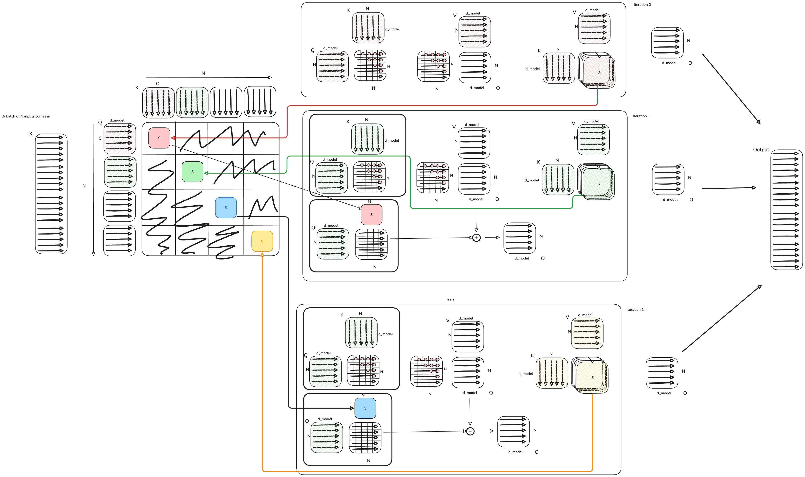
当 $C=N$ 时，就会恢复成标准的 $O(N^2)$ 注意力；当 $C=1$ 时，则会得到普通的线性注意力。
中间的 $C$ 值在二者之间插值：增加 chunk 内部的额外计算，换取更高的硬件利用率。实际中，$C$ 通常取 64 或 128，因为 tensor core 指令可以在这种粒度下高效运行；UMMA 就是一个例子。
中间得到的 tile 会作为状态更新的一部分，被折叠进 $S$：
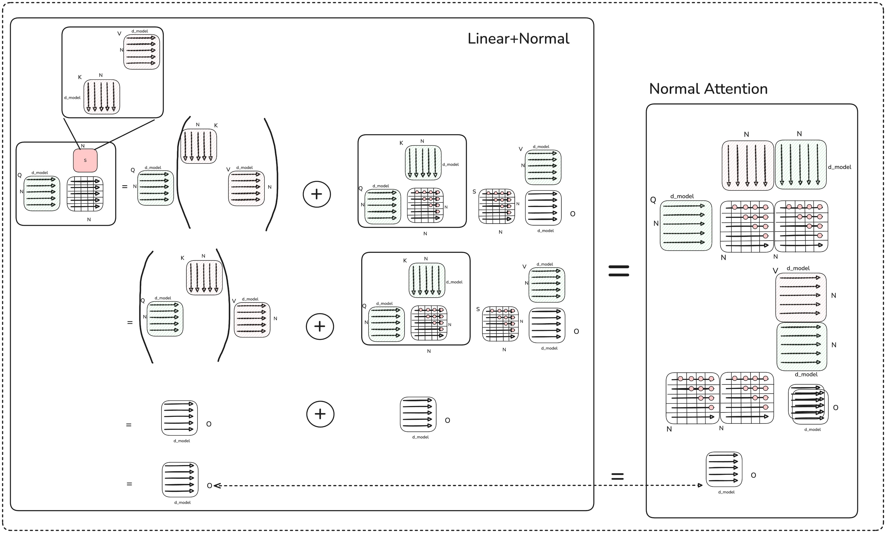
S = torch.zeros(b, h, dh, dh) if cache is None else cache
outs = []
for i in range(t//C):
q_c = q[:, :, i*C:(i+1)*C]
k_c = k[:, :, i*C:(i+1)*C]
v_c = v[:, :, i*C:(i+1)*C]
o_prev=q_c@S #this is everything up to this block
attn=(q_c@k_c.transpose(-1,-2)).tril() #masked attention
o_curr=attn@v_c
o=o_prev+o_curr
S_new=k_c.transpose(-1,-2)@v_c #recurrent attention
S=S+S_new
outs.append(o)
o = torch.cat(outs, dim=2)
在一个 block 内，我们计算 $q(k^\top v)$。这里先计算分数，也就是普通的、带 mask 的注意力顺序。
跨越不同 block 时，我们使用 $(k^\top v)q$，也就是先形成状态、再进行读取的递推顺序。
注意力的成本会以 $O(N^2)$ 增长，而这种方法不会。在一个 block 内，我执行真正的注意力，也就是带 mask 的 $QK^\top$ 乘以 $V$；跨 block 时，我把所有内容折叠进状态，再通过一次矩阵乘法读出来。
因此，成本可以拆成两部分。固定部分为 $2Ld^2$，这是状态处理工作，与 $C$ 无关；增长部分为 $2LCd$，对应位于对角线上的分数矩阵。
完整注意力只是 $C=L$ 时的特殊情况，此时第二项变成 $2L^2d$，也就是二次复杂度。因此，$C$ 越小，需要的 FLOPs 就越少。
从纯 FLOPs 的角度看，$C=1$ 是最便宜的选择，但从真实运行时间看却不一定如此。当工作能够高效映射到 GPU 的矩阵乘法硬件上时，GPU 可能会在更短时间内完成更多的算术运算。
下一步是把同样的方法扩展到 DeltaNet。
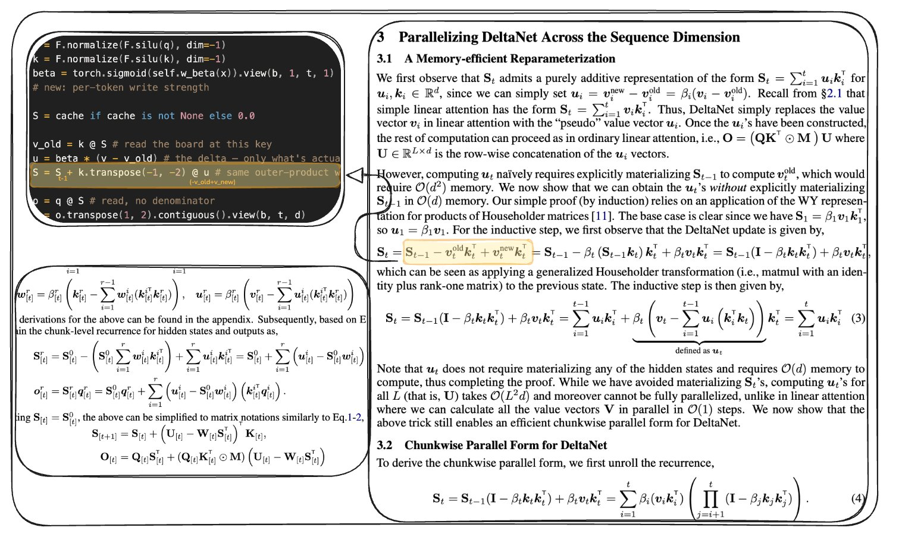
底层问题很简单：用于纯加法注意力的 chunk 方法，不能直接应用于 delta update：
v_old = k_i @ S
u_i = b_i * (v_i - v_old)
为了计算需要被减掉的信息，我们需要知道每一个中间状态。如果不做某种数学上的重新参数化，就无法用同样的方法进行并行。
因此，作者把 delta update 从下面的形式：
u=v_new-v_old
S_t= S_(t-1)+K.T@u
o=q@S_T
进行改写。在这种形式中，一个串行循环每次迭代计算一个 delta。
重新参数化后的形式是：
S_t = S_{t-1}(I − β_t k_t k_tᵀ) + β_t v_t k_tᵀ
o_t = S_t q_t
这种形式允许 chunk 代码一次性计算全部 $C$ 个 delta：
def chunk_delta_rule_forward(Q, K, V, beta, C):
# L: sequence length, d: head dimension
L, d = Q.shape
# chunking
Q, K, V = map(lambda x: x.reshape(-1,C,d), [Q, K, V])
beta = beta.reshape(-1, C)
K_beta = K * beta.unsqueeze(-1)
V_beta = V * beta.unsqueeze(-1)
# compute eq. 10 with vectorized forward substitution for fast inverse
T = -(K_beta @ K.t()).tril(-1)
for i in range(1, C):
T[i, :i] = T[i, :i] + (T[i, :, None] * T[:, :i]).sum(-2)
T += torch.eye(C)
W = T @ K_beta
U = T @ V_beta
# chunkwise parallel. Eq. 8-9
S = torch.zeros(d, d)
O = torch.empty_like(V)
for i in range(L//C):
q_i, k_i, w_i = Q[i], K[i], W[i]
u_i = U[i] - w_i @ S # the corrections, all of one chunk
o_inter = q_i @ S
A_i = (q_i @ k_i.t()).tril() #qk.t
o_intra = A_i @ u_i # attention @ v (with corrections, so u)
S += k_i.t() @ u_i # update state with addition
O[i] = o_intra + o_inter #update output with flash + recurrent
return O.reshape(L, d)
现在，我们终于来到了第一个可以进行对比的位置：多头注意力 Transformer 与 DeltaNet Transformer：
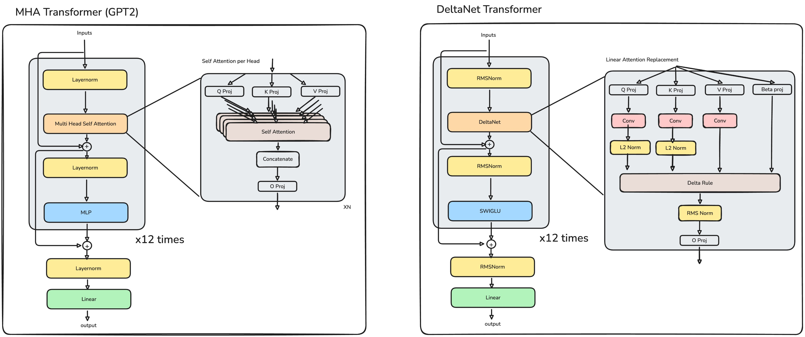
Gated Delta Net
现在，我们已经有了一种对缓存进行精确修改的方法。每出现一个新的事实——也就是每出现一个新的 key 向量——我们都可以查看那个位置上究竟存储了什么旧信息，再用我们希望注意的新信息替换它。
但是，这套机制只能遗忘那些拥有特定替代内容的关联。它无法在上下文切换时高效地一次清理多个关联，也无法对记忆进行一般性的衰减，以释放容量。
如果我们使用的是纯加法线性注意力，那么：
增加遗忘能力会非常简单。只需要一个控制状态遗忘程度的参数：
S_old=cache
S_new=k@v
# cache=S_old+S_new
cache=alpha * S_old + S_new
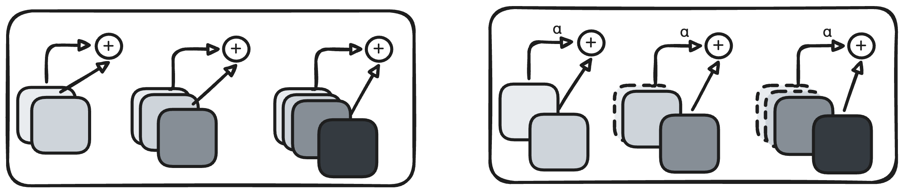
这就是 Mamba-2 的贡献。我们先衰减此前的缓存，再以完整强度加入新缓存，防止状态无限增长。
在每个时间步，用一个动态比例均匀衰减所有 key-value 关联，是一种可行的方法，也是 Mamba 所采用的方法。但它没有考虑不同 key-value 关联之间重要程度的差异。
也就是说，如果模型需要忘掉一个特定关联，那么所有关联都会被同等程度地遗忘。与之相反，Delta Rule 可以更新一个单独的事实，但它没有办法让其他事实自然衰减。
因此，Gated Delta Rule 把 Mamba 的门控更新规则和 Delta Rule 结合起来。它加入一个参数 $\alpha$：当 $\alpha=1$ 时，切换成纯 Delta Rule；当 $\alpha=0$ 时，清空记忆。挑战在于，要如何使用前面相同的并行 chunk 方法实现它。
具体实现使用了上一节介绍的同一种 DeltaNet 重新参数化。数学形式几乎完全相同，只额外增加了一个由数据决定的、位于 0 和 1 之间的标量，用来控制先前状态的衰减。
这样就把有效的 key-value 关联学习，与自适应的记忆管理结合在了一起。
对应的代码变化如下图所示：
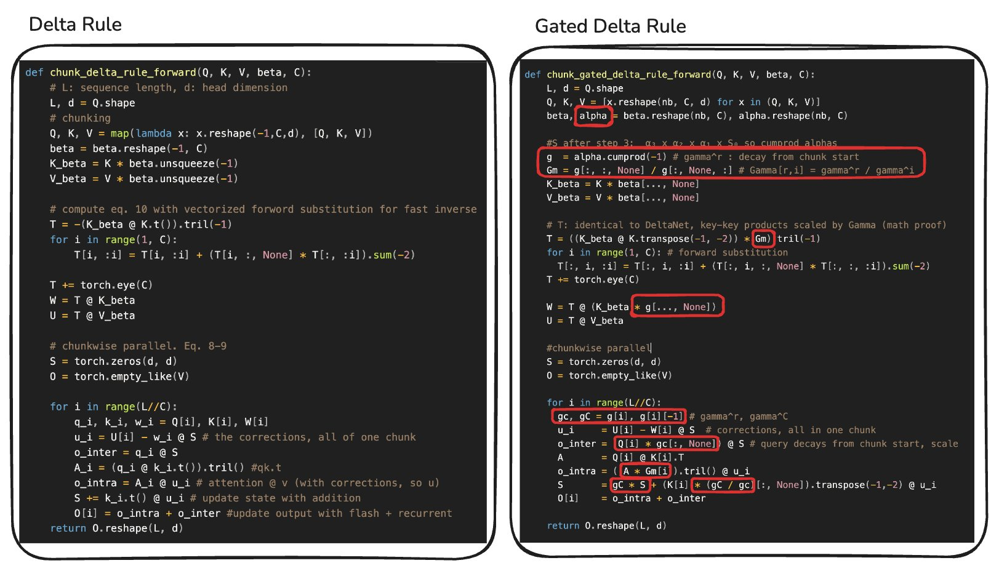
其中的 $\gamma^r/\gamma^i$ 项负责处理累积衰减。
如果一个 token 在时间步 $x$ 被写入，并在 $x+t$ 时被读取，那么它已经依次乘上 $\alpha_x\alpha_{x+1}\alpha_{x+2}\cdots\alpha_{x+t}$。
这相当于 prefix-sum 计算的乘法版本。
最终得到的架构如下：
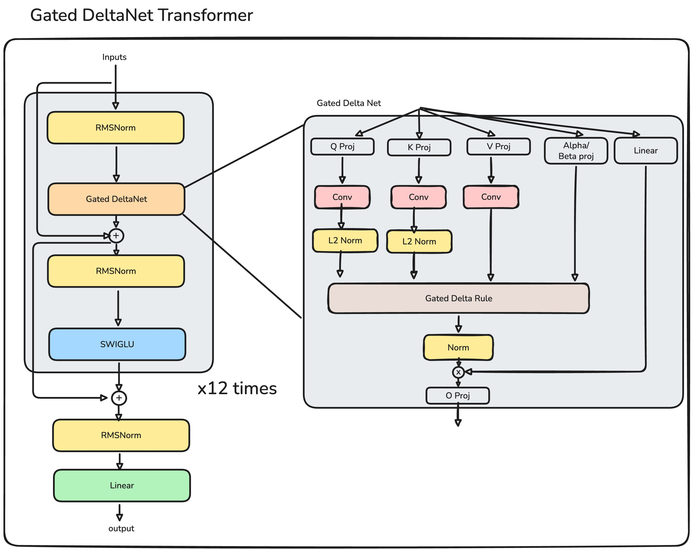
KDA / Kimi Linear
到这一步，研究人员开始尝试在同一个架构中混合多种形式的注意力，例如把 Gated DeltaNet 与 Mamba 结合起来。
Kimi Linear 之所以引起关注，是因为它提出了一个核心主张：在受控对比中，它的表现超过了全注意力。
作者把它描述为一种可以直接替换原架构的方案，拥有更高的质量，并且解码吞吐最高可以达到原来的 6 倍。
Kimi Linear 通过引入细粒度门控，对 Gated DeltaNet 进行了改进。它不再只使用一个标量衰减值，而是为每个通道学习一个独立的衰减值。
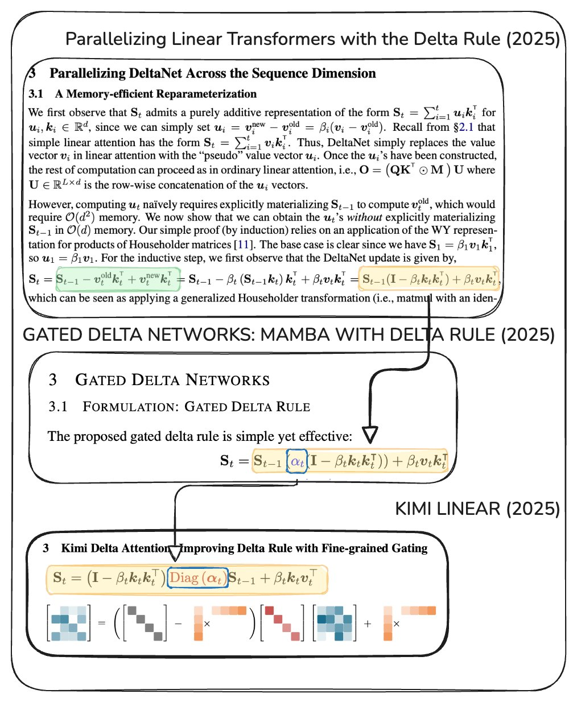
KDA 的更新规则仍然相似，但代码现在更接近下面的形式：
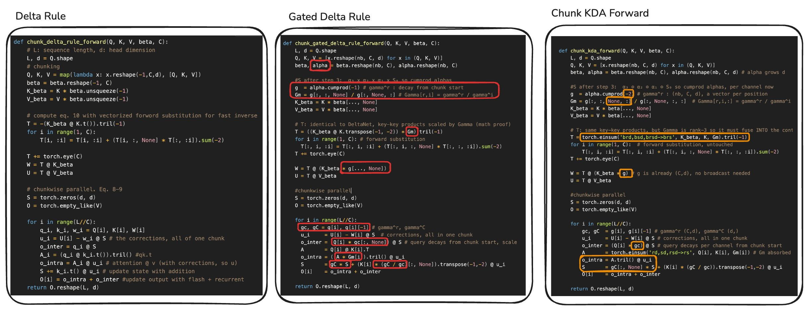
其中，alpha.reshape(nb, C, d) 体现了论文最重要的贡献：对记忆衰减进行细粒度控制。
把 Kimi Linear 架构和 DeltaNet Transformer 放在一起比较，可以看到 Kimi Linear 引入了三项主要变化：
- 使用混合系统，交错插入多头潜在注意力（Multi-head Latent Attention，MLA）层；
- 用混合专家（Mixture-of-Experts，MoE）层替换 MLP；
- 通过 alpha projection 为 DeltaNet 增加容量。
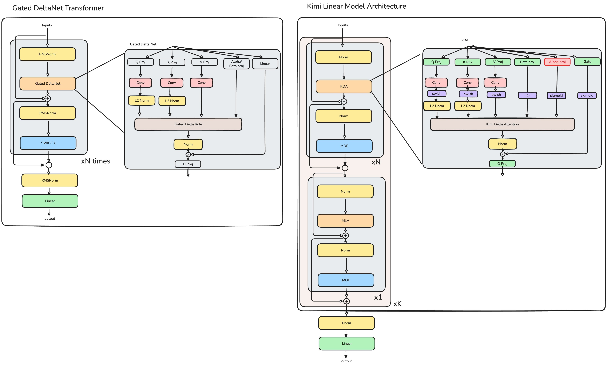
后面的章节会更详细地讨论 MLA 和 MoE。现在，最重要的一点是：这不是盲目的规模扩张。
新增的容量拥有明确的数学目的：逐通道的 scale 让模型能够更精细地控制记忆衰减。
Scaling law 仍然重要，但容量必须被添加在正确的位置上，并且必须以系统能够实际利用的形式加入。
这条演进路径中的每一种架构，都是通过增加容量，解决前一种系统中一个明确存在的局限。
Kimi K3
最终，KimiK3 的语言模型主干看起来与前面的 Kimi Linear 模型相似。
它包含 23 个由四层组成的 macrocycle。在每个 macrocycle 中，三层使用 Kimi Delta Attention，第四层使用 Multi-head Latent Attention。
第一层使用稠密的前馈网络；剩余每一层都使用 latent Mixture-of-Experts。
乍看之下，从 Kimi Linear 到 KimiK3 的变化似乎并不大：
- 大幅增加模型规模；
- 每 12 层加入一次 blockwise AttnRes；
- MLA query LoRA 和输出门控；
- latent-space MoE；
- SiTU 激活函数；
- Gated MLA。
KDA 提供状态大小固定的递归记忆，而周期性出现的 MLA 层，则保留了在整个上下文上执行完整 softmax 检索的能力。
下面这张简化图可以作为后续变化的参考：
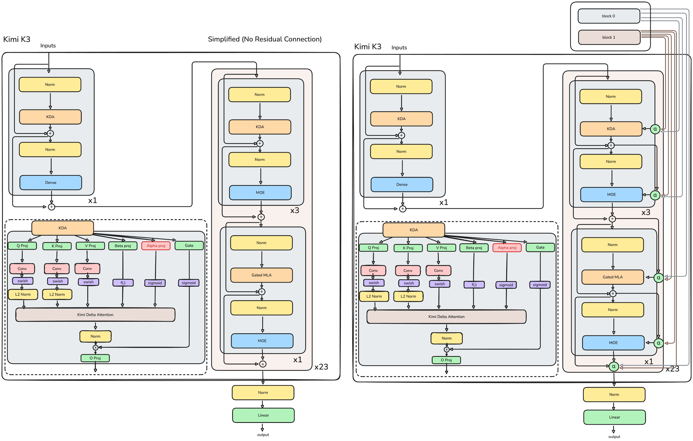
我们首先介绍比较直接的几项变化：Gated MLA、latent-space MoE 和 SiTU 激活函数。
Gated MLA 决定了从 MLA 中检索出的每个特征，有多少能够进入 residual stream。它通过逐元素乘法实现这一点，其中 gate 由输入投影得到。
在传统 MoE 中，学习得到的 router 使用点积相似度，把每个 token 发送到专家网络的一个子集。
KimiK3 总共有 898 个专家。其中两个是共享专家，会处理每一个 token；剩余 896 个专家中，router 会为每个 token 选择 16 个。
KimiK3 还改变了专家中的激活函数。
传统做法是：对 up projection 使用 SiLU，再将它与 gate 做逐元素乘法，最后执行 down projection。KimiK3 改用 SiTU：
d = x.shape[-1] // 2
gate = x[..., :d].to(torch.float32)
up = x[..., d:].to(torch.float32)
situ_a = self.beta * torch.tanh(gate / self.beta) * torch.sigmoid(gate)
if self.linear_beta is not None:
up = self.linear_beta * torch.tanh(up / self.linear_beta)
return (situ_a * up).to(x.dtype)
模型还会先把输入向下投影到共享专家，并把这些共享专家最终的求和结果向上投影回来：
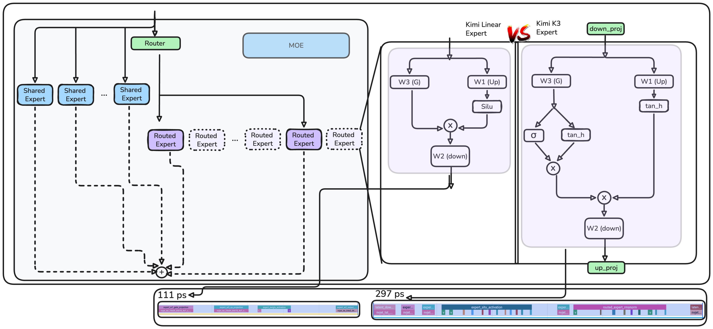
这体现了模型推理中反复出现的一项挑战：如果没有 fused kernel，新的激活路径会比原路径慢将近 3 倍。
一种用于抵消额外开销的优化是：让专家在压缩后的 latent space 中运行。这会使专家的前向传播快得多，并且几乎把 FLOPs 降低一半。
剩余的变化包括 MLA query LoRA、输出门控，以及每 12 层执行一次 blockwise Attention Residual。
AttnRes 会增加大约 2% 的推理延迟，但提供两个重要收益：
- 有选择地检索早期表示，从而减轻 residual dilution 和隐藏状态增长；
- 1.25 倍的计算优势。
AttnRes 和 MLA 从两个不同方向处理同一个根本局限。
KDA 层使用固定大小的状态，因此不可避免地要丢弃信息。MLA 从 token 上下文中检索，而 AttnRes 则从深度维度上更早的表示中检索。
AttnRes
感谢 @chloey3k 对本节的帮助。
在每次前向传播中，输入都会经过一叠 layer。这里，每一层都由一个注意力 block（KDA 或 MLA），以及一个 MLP 或 MoE block 组成。
通常，每一层的输入，是原始 embedding 与此前每一层输出的总和，并且所有项拥有相同的权重：
\[h_l = h_1 + \sum_{i=1}^{l-1} f_i(h_i)\]这里，$h_i$ 是第 $i$ 层的输入；$h_1$ 是当前 token 的 embedding，也就是到目前为止序列中的最后一个 token；$f_i(h_i)$ 是第 $i$ 层的输出，也就是一个注意力或 MLP block 的输出。
问题在于缺乏选择性访问。
不同类型的 layer 会接收到同一个聚合状态，尽管它们可能适合不同的权重组合。
因为这种递推是纯加法的，后面的层还必须学会输出越来越大的值，才能影响不断累积的 residual；这可能导致训练不稳定。
AttnRes 不再同等对待所有 layer，而是为总和中的每一项乘上一个专门的权重。这样，模型就能够根据上下文，把更高的重要性赋予最有用的 layer：
\[h_l = \alpha_0 h_1 + \sum_{i=1}^{l-1} \alpha_i f_i(h_i)\]每个权重 $\alpha_i$ 都通过 query-key 点积计算得到。
query 是为每一层学习得到的，而 key 和 value 来自更早的 residual-stream 状态。分数会被归一化，使其总和为 1，然后被用于形成这些状态的加权组合。
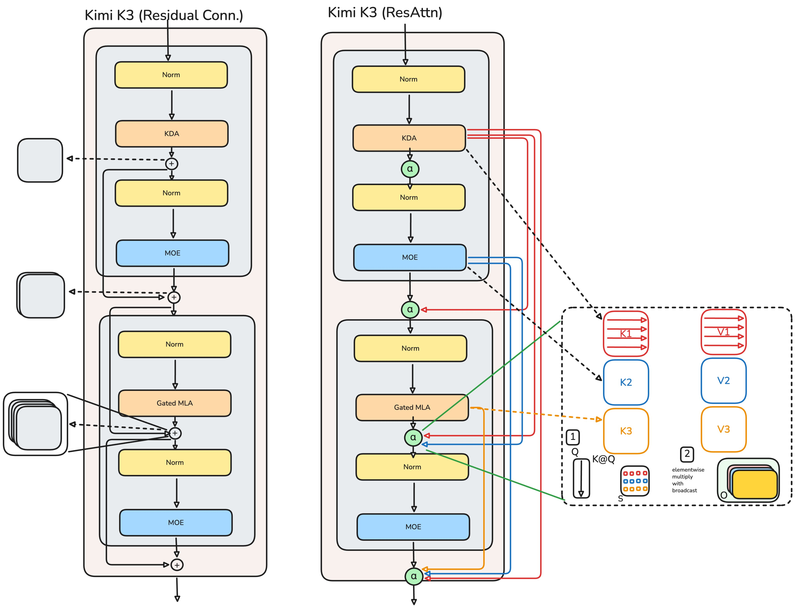
因此，模型不再只能依赖它的直接前驱。
AttnRes 允许每一层有选择地访问更早的 layer 输出，使它学习得到的 query 能够检索当前计算最需要的表示。
下面的伪代码把同一个思路应用在 block 粒度上。
一个 block，是在 12 个 decoder layer 中累积的注意力输出和 MLP 输出的逐元素总和。它会作为一个单独的深度表示被保存，用于后续的 AttnRes 混合。
如果在每一层都应用 residual attention，会增加过多的训练和推理成本。
只在固定 block 边界上应用它，则可以用更低的成本获得大部分收益。
在 KimiK3 中，每个边界出现在 12 个 decoder layer 之后。在 23 个四层 macrocycle 中，这会形成 8 个 AttnRes block，并提高我们的推理速度。
下面可能是 block_attn_res 函数中最重要的部分：
V = torch.stack(blocks + [partial_block]) # [N+1, B, T, D]
K = norm(V)
logits = torch.einsum('d, n b t d -> n b t', proj.weight.squeeze(), K)
h = torch.einsum('n b t, n b t d -> b t d', logits.softmax(0), V)
return h
至此，我们完成了从 GPT-2 到 KimiK3 的整个演进过程。
核心变化并不只有规模。每一步架构演化，都改变了模型存储什么、如何更新状态，或者如何检索固定大小状态无法保存的信息。
KimiK3 结合了状态大小固定的递归记忆、周期性的 softmax 检索、稀疏专家容量，以及对深度残差表示的选择性访问。
最终得到的系统，会把额外容量投入那些具有明确功能作用的位置。
从本质上说，固定容量、固定维度的关联记忆需要一种淘汰策略。
原因在于：纯加法的线性操作一旦达到容量上限，就会不断增加信息干扰。
因此，系统需要学习得到的选择机制，例如 gating、routing 或 decay。
而注意力，则是目前最有效的选择性读取机制。